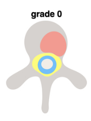
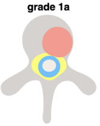
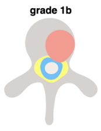
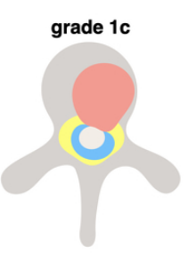
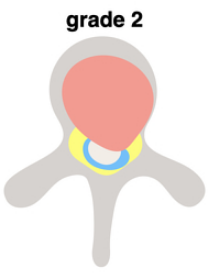
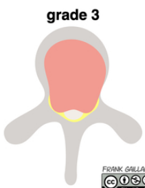

Calculadora SINS
Resultado SINS:
Puntuación total: 0 - (Estable)
Escala de Frankel
Interpretación Frankel:
Seleccione un grado para ver la interpretación.
Escala JOA modificada (mJOA)
Resultado mJOA:
Puntuación total: 0 - (Sin mielopatía)
Escala de Compresión de la Médula (ESCC)
Seleccione la imagen que mejor represente la compresión de la médula espinal.

Grado 0

Grado 1a

Grado 1b

Grado 1c

Grado 2

Grado 3
Resultado Bilsky:
Seleccione un grado para ver la interpretación.
Clasificación de Pola para Spondylodiscitis
Resultado Pola:
Clasificación: -
Tratamiento Recomendado: -